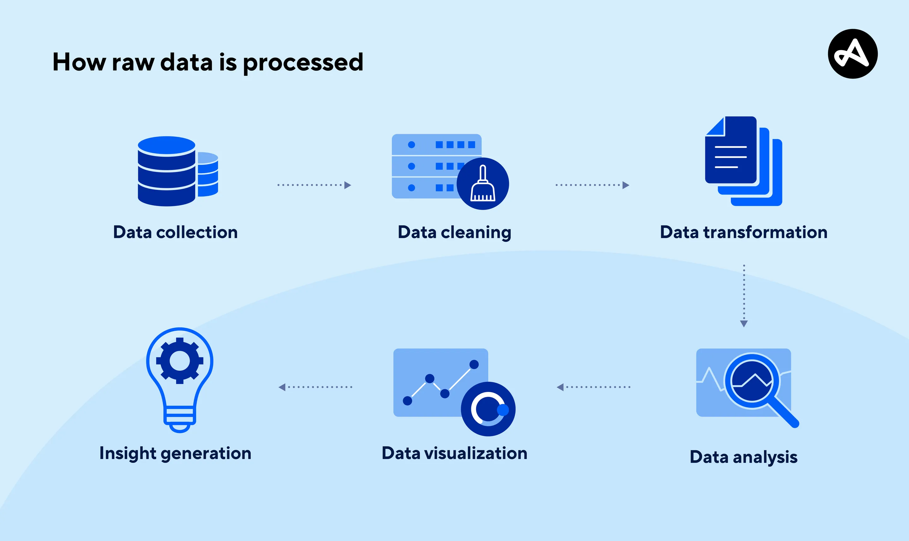
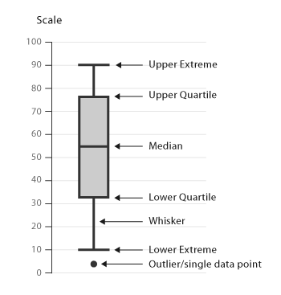

Data Visualization
What is Data Visualization?
Data visualization is the practice of turning raw data into charts, graphs, or other visuals so it is easier to understand. Instead of reading through long tables or numbers, visuals help you quickly notice patterns, trends, and changes. It’s an important part of machine learning because it gives you a clearer picture of your data before building any models.
Image Source: Google Search
Common Types of Visualizations
Different visualizations are used to highlight different parts of a dataset, and each type of chart has its own purpose. Some visuals make it easier to spot trends, while others help compare groups or understand how values are spread out. Picking the right chart helps you interpret data more clearly and communicate your findings better.
- Line Plot : Shows how values change over time by connecting data points with a line. It is useful for tracking trends, patterns, or changes such as temperature over days or sales across months.
- Bar Chart : Compares different categories or groups using rectangular bars. It helps visualize differences between groups, like comparing the popularity of products, countries, or age ranges.
- Scatter PLot : Displays individual data points on a graph to show the relationship between two variables. It is often used to see whether variables are correlated, like study time vs. test scores.
- Histogram : Shows how data is distributed by grouping values into bins and displaying how often each range appears. It is helpful for seeing patterns such as skewed data, clusters, or whether values are evenly spread.
- Pie Chart : Represents parts of a whole by dividing a circle into slices. It is commonly used for showing percentages, such as how different categories contribute to a total.
- Box PLot : Summarizes the spread of data using quartiles and highlights the median, lower and upper ranges, and any outliers. This chart is useful for seeing the overall distribution and spotting unusual values. 

Image Source: Google Search

Image Source: Google Search

Image Source: Google Search

Image Source: Google Search

Image Source: Google Search
Image Source: Google Search